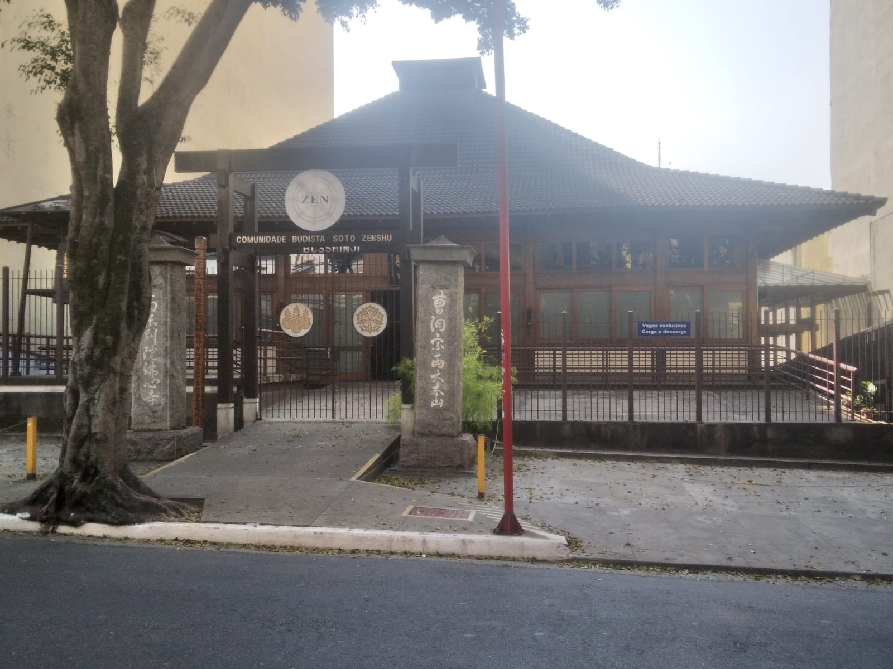
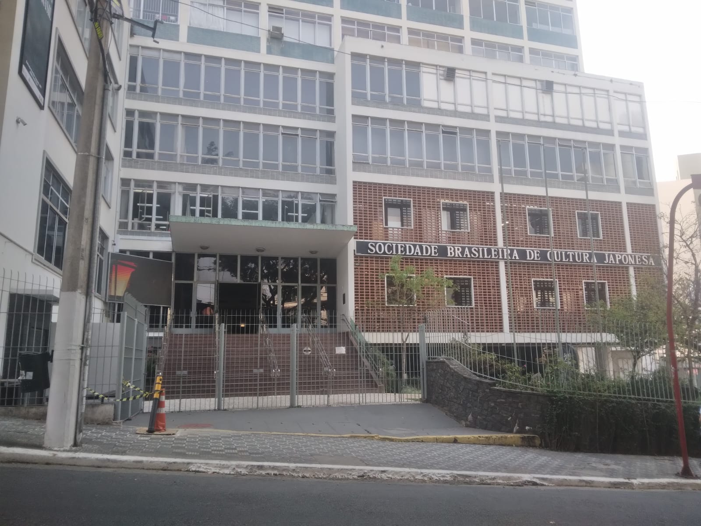
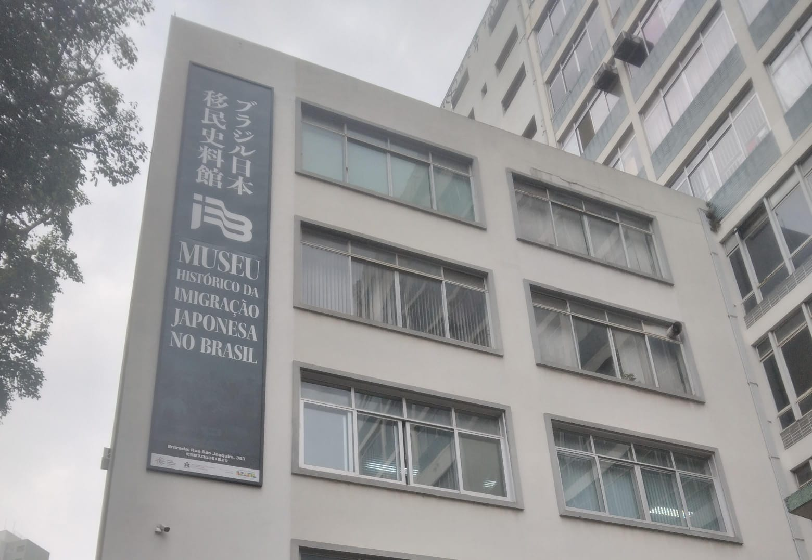
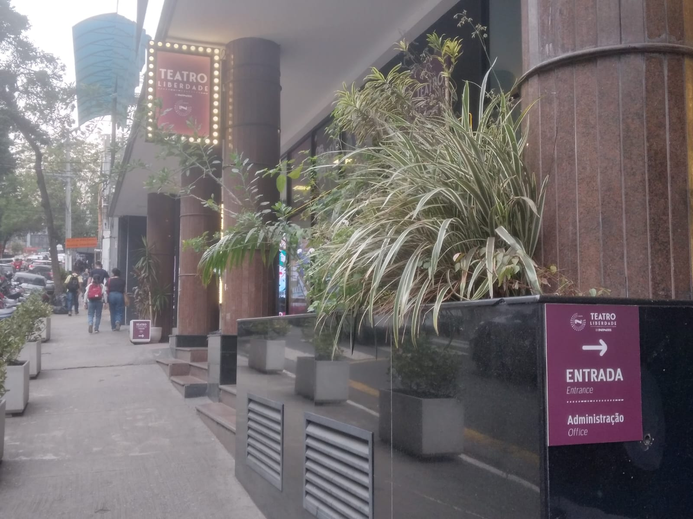
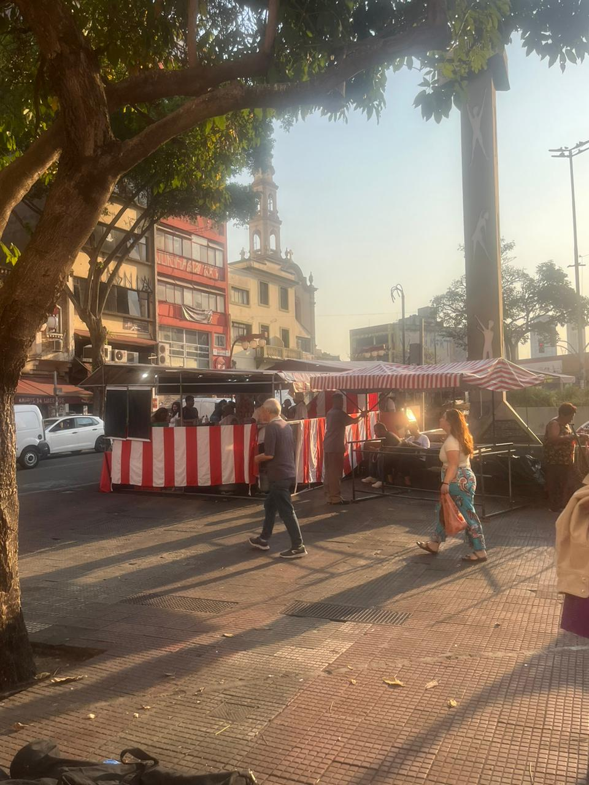

O Jardim Oriental é um refúgio de tranquilidade em meio à agitação da área circundante. Este espaço é projetado em estilo oriental e abriga um lago com carpas.

O Templo Busshinji(nome da edificação da comunidade budista soto zenshu), em São Paulo-SP-Liberdade, foi aberto em 1955, é o templo central da Escola Budista Soto Zen para a América do Sul. Está localizado na rua São Joaquim, 285 Liberdade, São Paulo SP. De tradição japonesa da vertente budista Mahayana, o templo Busshinji abriga a Comunidade Budista Sotozenshu da América do Sul.
O Jardim Oriental é um refúgio de tranquilidade em meio à agitação da área circundante. Este espaço é projetado em estilo oriental e abriga um lago com carpas.
A Sociedade Brasileira de Cultura Japonesa e de Assistência Social, também conhecida como Bunkyo, é uma das principais organizações da comunidade. Fundada em 1955, o Bunkyo promove diversas atividades culturais, como festivais, cursos de gastronomia, e eventos esportivos.
Fundado em 1978, o museu foi criado para preservar e transmitir os valores socioculturais dos imigrantes japoneses às futuras gerações. O acervo do museu é impressionante, com mais de 97 mil itens, incluindo fotos, jornais, brinquedos antigos, microfilmes, livros e kimonos. Ele oferece uma visão detalhada da vida dos imigrantes japoneses no Brasil, desde sua chegada no início do século XX até os dias atuais. O museu está dividido em três andares, cada um dedicado a diferentes aspectos da imigração. No sétimo andar, você encontrará exposições sobre a vida cotidiana dos imigrantes. O oitavo andar é dedicado à preservação de documentos históricos, e o nono andar apresenta exposições temporárias e eventos culturais.
A capital de São Paulo recebe o Teatro Liberdade, um espaço diferenciado, onde o histórico encontra a modernidade, a tecnologia livre de padrões acostumados de outros espaços na cidade e muito requinte. Administrado pela Infinitus Entertainment, o novo teatro já ganhou destaque. Em termos de valorização, qualidade dramatúrgica e, principalmente, pelo conforto que oferece, já é considerado segundo maior teatro da cidade de São Paulo, comportando 900 lugares. Se estiver passando pela Liberdade, vale a pena visitar esse local.
A Praça da Liberdade é um dos pontos mais icônicos do bairro da Liberdade, em São Paulo. Fundada em 1903, a praça tem uma história rica e é um símbolo da diversidade cultural da cidade1. Originalmente, foi um espaço de comemoração para a libertação dos escravos no Brasil. Hoje, a Praça da Liberdade é conhecida por suas características orientais, como as lanternas típicas que iluminam o local e o Portal da Cultura Japonesa, que marca a entrada da estação de metrô Japão-Liberdade. Nos finais de semana e feriados, a praça se transforma com a famosa Feira da Liberdade, onde você pode encontrar uma variedade de comidas orientais e artesanatos. Além disso, a praça é um ponto central durante os festivais culturais do bairro, como o Tanabata Matsuri e o Ano Novo Chinês, que atraem multidões para celebrar com danças, músicas e apresentações tradicionais.
